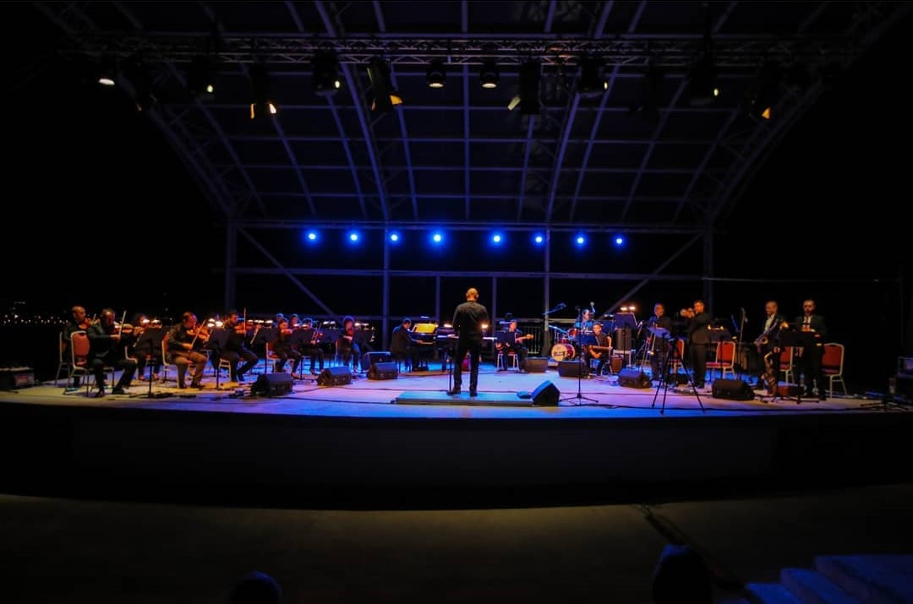
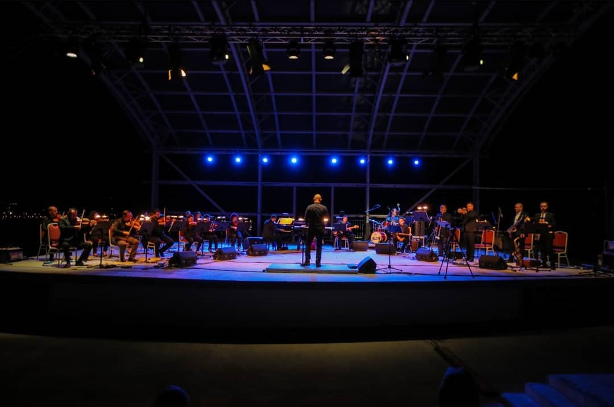

Short history of the festival
If we are to talk about Ohrid Summer Festival at the encounter of its 60th edition, it is certain that its existence of many years indicates to an awareness that the festival leans on something that indeed represents a great tradition. This tradition originates from the place which is given from God, from the city of Ohrid – the spiritual capital of Macedonia, the antique city with its magically blue lake, a city with a cultural history marked with values of the ancient civilization, the city of the first Slavic university in Europe, the city of Samuil’s kingdom and finally –the city that represents the whole Macedonian cultural and spiritual history.
For these reasons, not accidentally in this city-holy place, God only had to send his noble message in order to mark the beginning of something that had to happen here. It happened on the remote year 1961 midsummer – on august 4th. A light sparkled under the amazing arches of the beautiful cathedral church St. Sophia – a part of the monumental and ancient values of Ohrid from the 11th century. The glitter of that sparkle marked the birth of the manifestation which was probably destined by God, the same way as it was destined that the opera singer Ana Lipsha Tofovic mark the beginning of a festival, that later will obtain the name Ohrid Summer.


 
